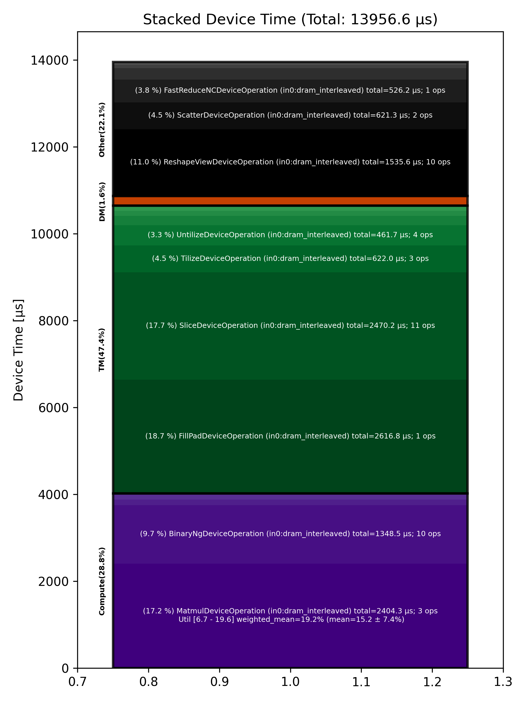

🚀 Performance Report 🚀 ======================== ID Total % Bound OP Code Device Device Time Op-to-Op Gap Cores DRAM DRAM % FLOPs FLOPs % Math Fidelity --------------------------------------------------------------------------------------------------------------------------------------------------------------------------- 27 0.6 % LayerNormDeviceOperation 25 124 μs 32 BF16, BF16 => BF16 52 0.9 % ReshapeViewDeviceOperation 18 54 μs 120 μs 72 BF16 => BF16 66 0.3 % UntilizeDeviceOperation 0 15 μs 40 μs 45 BF16 => BF16 104 1.1 % RepeatDeviceOperation 6 60 μs 157 μs 72 BF16 => BF16 143 1.2 % TilizeDeviceOperation 13 207 μs 36 μs 45 BF16 => BF16 189 8.5 % DRAM MatmulDeviceOperation 32 x 2880 x 5760 27 1,424 μs 250 μs 60 193 GB/s 66.9 % 11.9 TFLOPs 19.3 % HiFi4 BF16 x BFP8 => BF16 222 0.4 % BinaryNgDeviceOperation 28 84 μs 1 μs 72 BF16, BF16 => BF16 240 1.1 % UntilizeDeviceOperation 14 220 μs 1 μs 60 BF16 => BF16 278 6.1 % SliceDeviceOperation 20 1,194 μs 1 μs 72 BF16 => BF16 317 1.1 % TilizeDeviceOperation 27 208 μs 1 μs 45 BF16 => BF16 328 0.2 % UnaryDeviceOperation 6 35 μs 1 μs 72 BF16 => BF16 378 0.2 % BinaryNgDeviceOperation 24 38 μs 1 μs 72 BF16, BF16 => BF16 400 1.1 % UntilizeDeviceOperation 14 221 μs 1 μs 60 BF16 => BF16 428 6.1 % SliceDeviceOperation 10 1,194 μs 1 μs 72 BF16 => BF16 479 1.1 % TilizeDeviceOperation 29 207 μs 1 μs 45 BF16 => BF16 507 0.2 % UnaryDeviceOperation 25 34 μs 1 μs 72 BF16 => BF16 526 0.2 % BinaryNgDeviceOperation 12 41 μs 1 μs 72 BF16, BF16 => BF16 568 0.3 % UnaryDeviceOperation 22 52 μs 1 μs 72 BF16 => BF16 588 0.3 % BinaryNgDeviceOperation 10 49 μs 1 μs 72 BF16, BF16 => BF16 629 0.2 % BinaryNgDeviceOperation 19 48 μs 1 μs 72 BF16, BF16 => BF16 667 4.8 % SLOW MatmulDeviceOperation 32 x 2880 x 2880 25 938 μs 1 μs 45 148 GB/s 51.3 % 9.1 TFLOPs 19.6 % HiFi4 BF16 x BFP8 => BF16 676 0.3 % BinaryNgDeviceOperation 2 51 μs 1 μs 72 BF16, BF16 => BF16 709 6.3 % ReshapeViewDeviceOperation 3 1,233 μs 1 μs 72 BF16 => BF16 757 0.5 % TypecastDeviceOperation 19 107 μs 1 μs 72 BF16 => FP32 801 0.5 % ReshapeViewDeviceOperation 31 90 μs 1 μs 72 FP32 => FP32 813 0.2 % SLOW MatmulDeviceOperation 32 x 2880 x 128 11 43 μs 1 μs 4 18 GB/s 6.1 % 0.6 TFLOPs 6.7 % HiFi2 FP32 x BFP8 => FP32 834 0.0 % TypecastDeviceOperation 0 3 μs 1 μs 4 FP32 => BF16 897 0.4 % TopKDeviceOperation 31 80 μs 2 μs 1 BF16 => BF16 924 0.0 % SliceDeviceOperation 26 1 μs 2 μs 1 BF16 => BF16 960 0.0 % SliceDeviceOperation 30 1 μs 2 μs 1 UINT16 => UINT16 974 0.0 % TypecastDeviceOperation 12 2 μs 2 μs 1 UINT16 => INT32 997 0.0 % ReshapeViewDeviceOperation 3 9 μs 1 μs 32 INT32 => INT32 1040 0.0 % UntilizeWithUnpaddingDeviceOperation 14 5 μs 1 μs 32 INT32 => INT32 1060 0.0 % UntilizeWithUnpaddingDeviceOperation 2 5 μs 1 μs 32 INT32 => INT32 1099 0.0 % PermuteDeviceOperation 9 4 μs 1 μs 32 INT32 => INT32 1131 0.0 % PermuteDeviceOperation 9 4 μs 1 μs 32 INT32 => INT32 1184 0.0 % ConcatDeviceOperation 30 3 μs 1 μs 64 INT32, INT32 => INT32 1216 0.0 % PermuteDeviceOperation 30 4 μs 1 μs 32 INT32 => INT32 1235 0.0 % TilizeWithValPaddingDeviceOperation 17 9 μs 1 μs 32 INT32 => INT32 1277 0.1 % SoftmaxDeviceOperation 27 25 μs 1 μs 72 BF16 => BF16 1282 0.5 % AllGatherDeviceOperation 0 88 μs 1 μs 24 INT32 => INT32 1314 0.1 % AllGatherDeviceOperation 0 11 μs 1 μs 8 BF16 => BF16 1354 0.1 % ReshapeViewDeviceOperation 8 11 μs 1 μs 16 INT32 => INT32 1394 0.0 % SliceDeviceOperation 16 3 μs 1 μs 16 INT32 => INT32 1441 0.1 % UntilizeWithUnpaddingDeviceOperation 31 15 μs 1 μs 16 INT32 => INT32 1453 0.2 % SliceDeviceOperation 11 6 μs 25 μs 72 INT32 => INT32 1500 1.2 % TilizeWithValPaddingDeviceOperation 26 8 μs 224 μs 16 INT32 => INT32 1528 0.6 % BinaryNgDeviceOperation 22 13 μs 103 μs 72 INT32, INT32 => INT32 1542 0.8 % BinaryNgDeviceOperation 4 4 μs 160 μs 72 INT32, INT32 => INT32 1574 1.3 % ReshapeViewDeviceOperation 4 7 μs 243 μs 16 INT32 => INT32 1613 1.2 % ReshapeViewDeviceOperation 11 3 μs 235 μs 16 BF16 => BF16 1643 0.5 % UntilizeWithUnpaddingDeviceOperation 9 12 μs 90 μs 1 INT32 => INT32 1669 0.8 % SliceDeviceOperation 3 1 μs 151 μs 1 INT32 => INT32 1711 0.7 % TilizeWithValPaddingDeviceOperation 13 44 μs 92 μs 1 INT32 => INT32 1731 0.7 % UntilizeWithUnpaddingDeviceOperation 1 10 μs 132 μs 1 BF16 => BF16 1765 0.4 % SliceDeviceOperation 3 1 μs 75 μs 1 BF16 => BF16 1824 0.9 % TilizeWithValPaddingDeviceOperation 30 23 μs 163 μs 1 BF16 => BF16 1843 0.4 % UntilizeWithUnpaddingDeviceOperation 17 7 μs 75 μs 1 INT32 => INT32 1866 0.8 % UntilizeWithUnpaddingDeviceOperation 8 6 μs 159 μs 1 BF16 => BF16 1910 2.0 % ScatterDeviceOperation 20 312 μs 89 μs 1 BF16, INT32 => BF16 1941 0.2 % TilizeWithValPaddingDeviceOperation 19 32 μs 1 μs 64 BF16 => BF16 1955 0.5 % UntilizeWithUnpaddingDeviceOperation 1 12 μs 92 μs 1 INT32 => INT32 1986 0.4 % SliceDeviceOperation 0 1 μs 74 μs 1 INT32 => INT32 2027 1.1 % TilizeWithValPaddingDeviceOperation 9 44 μs 168 μs 1 INT32 => INT32 2071 0.3 % UntilizeWithUnpaddingDeviceOperation 21 10 μs 52 μs 1 BF16 => BF16 2111 0.8 % SliceDeviceOperation 29 1 μs 160 μs 1 BF16 => BF16 2119 0.6 % TilizeWithValPaddingDeviceOperation 5 23 μs 86 μs 1 BF16 => BF16 2175 1.2 % UntilizeWithUnpaddingDeviceOperation 29 7 μs 234 μs 1 INT32 => INT32 2188 0.4 % UntilizeWithUnpaddingDeviceOperation 10 6 μs 81 μs 1 BF16 => BF16 2239 0.9 % UntilizeWithUnpaddingDeviceOperation 29 10 μs 165 μs 64 BF16 => BF16 2242 2.0 % ScatterDeviceOperation 0 309 μs 86 μs 1 BF16, INT32 => BF16 2293 0.2 % TilizeWithValPaddingDeviceOperation 19 32 μs 1 μs 64 BF16 => BF16 2317 0.1 % ReshapeViewDeviceOperation 11 26 μs 1 μs 16 BF16 => BF16 2368 1.9 % MeshPartitionDeviceOperation 30 1 μs 375 μs 4 BF16 => BF16 2399 0.6 % UntilizeDeviceOperation 29 6 μs 117 μs 1 BF16 => BF16 2420 3.5 % MeshPartitionDeviceOperation 18 2 μs 681 μs 32 BF16 => BF16 2458 0.6 % TilizeWithValPaddingDeviceOperation 24 4 μs 110 μs 1 BF16 => BF16 2475 0.9 % TransposeDeviceOperation 9 2 μs 178 μs 72 BF16 => BF16 2528 1.5 % ReshapeViewDeviceOperation 30 50 μs 250 μs 72 BF16 => BF16 2538 5.1 % BinaryNgDeviceOperation 8 935 μs 72 μs 72 BF16, BF16 => BF16 2570 13.4 % FillPadDeviceOperation 8 2,617 μs 1 μs 72 BF16 => BF16 2598 2.7 % FastReduceNCDeviceOperation 4 526 μs 1 μs 72 BF16 => BF16 2632 0.3 % SliceDeviceOperation 6 65 μs 1 μs 72 BF16 => BF16 2658 1.2 % ReduceScatterDeviceOperation 0 225 μs 1 μs 24 BF16 => BF16 2690 0.8 % AllGatherDeviceOperation 0 162 μs 1 μs 40 BF16 => BF16 2731 0.4 % BinaryNgDeviceOperation 9 87 μs 1 μs 72 BF16, BF16 => BF16 2754 0.3 % ReshapeViewDeviceOperation 0 53 μs 1 μs 72 BF16 => BF16 --------------------------------------------------------------------------------------------------------------------------------------------------------------------------- 100.0 % 87 device ops, 0 host ops, 0 signposts 13,957 μs 5,640 μs 📊 Stacked report 📊 ==================== Total % Op Code Device Time Sum Op Count Op Category Min FLOPs Max FLOPs Mean FLOPs Std FLOPs Weighted Mean FLOPs ------------------------------------------------------------------------------------------------------------------------------------------------------------------------------ 18.75 % FillPadDeviceOperation (in0:dram_interleaved) 2,616.81 μs 1 TM 17.70 % SliceDeviceOperation (in0:dram_interleaved) 2,470.18 μs 11 TM 17.23 % MatmulDeviceOperation (in0:dram_interleaved) 2,404.31 μs 3 Compute 6.72 % 19.58 % 15.22 % 7.36 % 19.21 % 11.00 % ReshapeViewDeviceOperation (in0:dram_interleaved) 1,535.61 μs 10 Other 9.66 % BinaryNgDeviceOperation (in0:dram_interleaved) 1,348.53 μs 10 Compute 4.46 % TilizeDeviceOperation (in0:dram_interleaved) 622.01 μs 3 TM 4.45 % ScatterDeviceOperation (in0:dram_interleaved) 621.26 μs 2 Other 3.77 % FastReduceNCDeviceOperation (in0:dram_interleaved) 526.16 μs 1 Other 3.31 % UntilizeDeviceOperation (in0:dram_interleaved) 461.68 μs 4 TM 1.87 % AllGatherDeviceOperation (in0:dram_interleaved) 261.52 μs 3 Other 1.62 % ReduceScatterDeviceOperation (in0:dram_interleaved) 225.45 μs 1 DM 1.57 % TilizeWithValPaddingDeviceOperation (in0:dram_interleaved) 219.54 μs 9 TM 0.89 % LayerNormDeviceOperation (in0:dram_interleaved) 123.78 μs 1 Compute 0.87 % UnaryDeviceOperation (in0:dram_interleaved) 121.12 μs 3 Compute 0.80 % TypecastDeviceOperation (in0:dram_interleaved) 111.87 μs 3 TM 0.73 % UntilizeWithUnpaddingDeviceOperation (in0:dram_interleaved) 101.87 μs 12 TM 0.57 % TopKDeviceOperation (in0:dram_interleaved) 79.60 μs 1 Other 0.43 % RepeatDeviceOperation (in0:dram_interleaved) 59.91 μs 1 Other 0.18 % SoftmaxDeviceOperation (in0:dram_interleaved) 25.27 μs 1 Compute 0.09 % PermuteDeviceOperation (in0:dram_interleaved) 12.19 μs 3 TM 0.02 % MeshPartitionDeviceOperation (in0:dram_interleaved) 3.07 μs 2 Other 0.02 % ConcatDeviceOperation (in0:dram_interleaved) 3.04 μs 1 TM 0.01 % TransposeDeviceOperation (in0:dram_interleaved) 1.80 μs 1 TM ------------------------------------------------------------------------------------------------------------------------------------------------------------------------------
